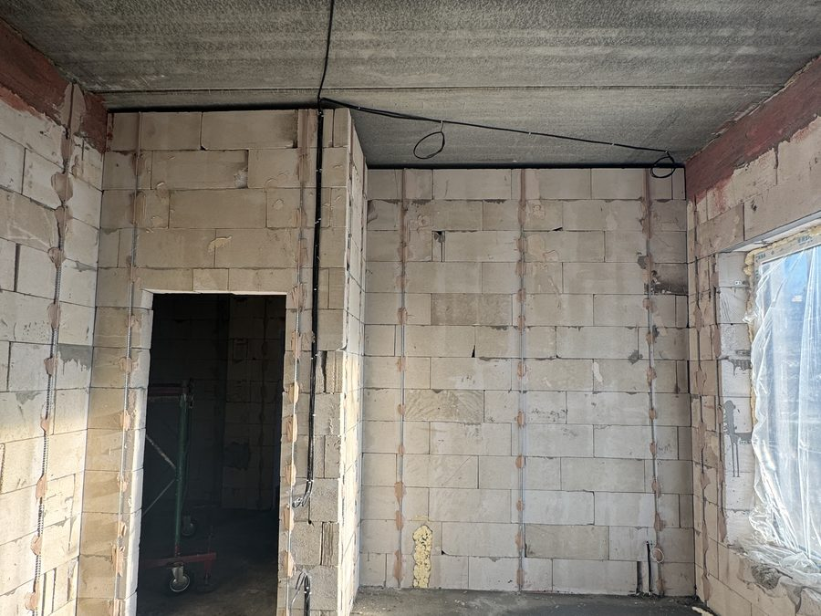
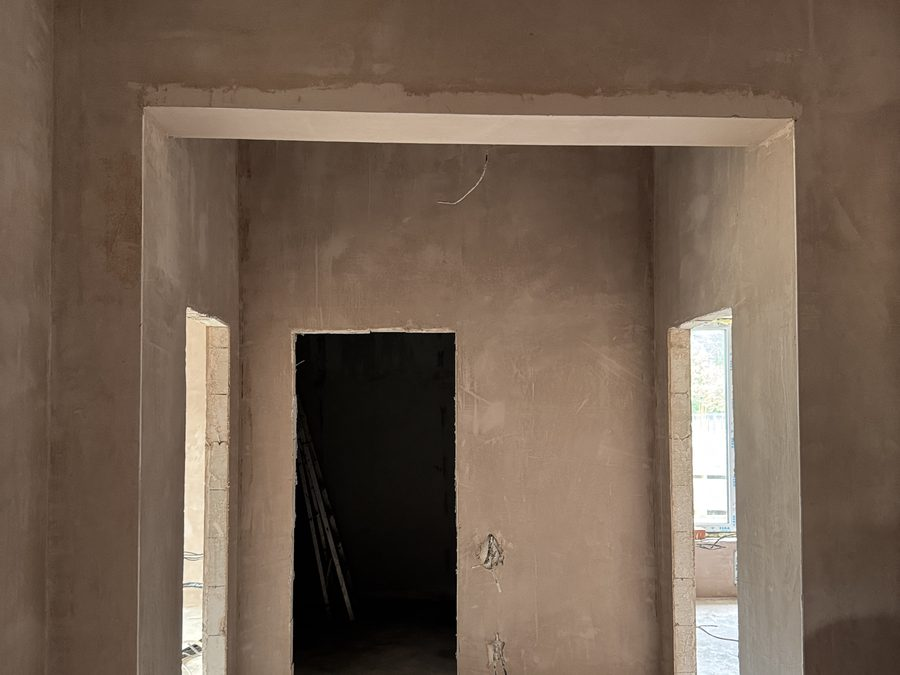
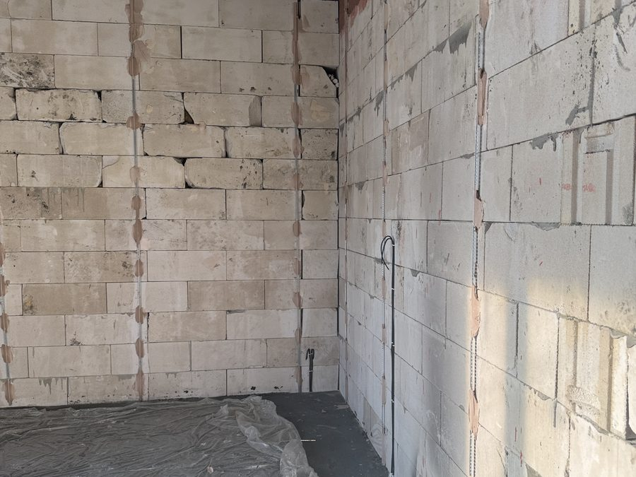
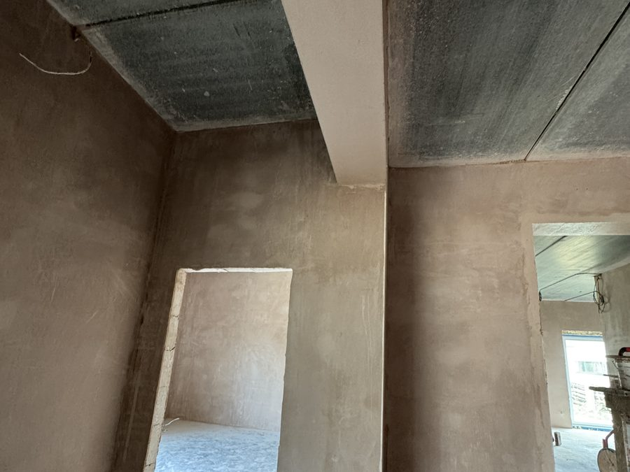
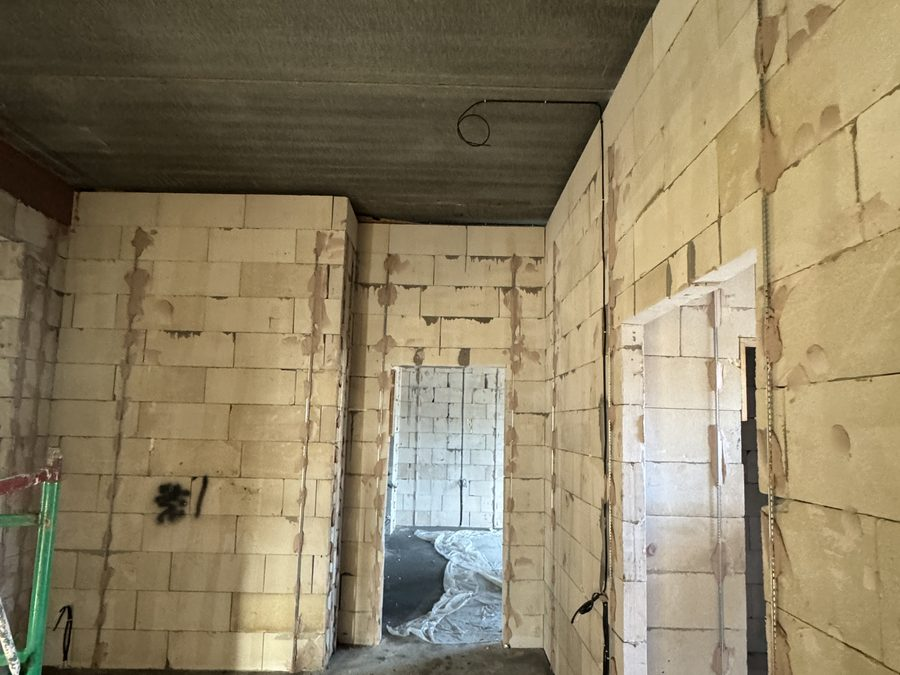
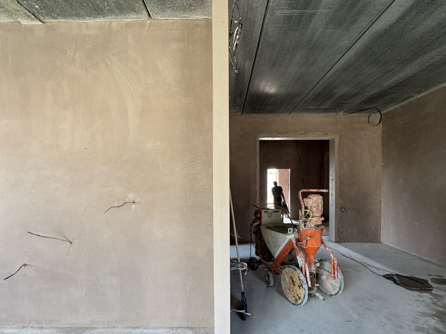
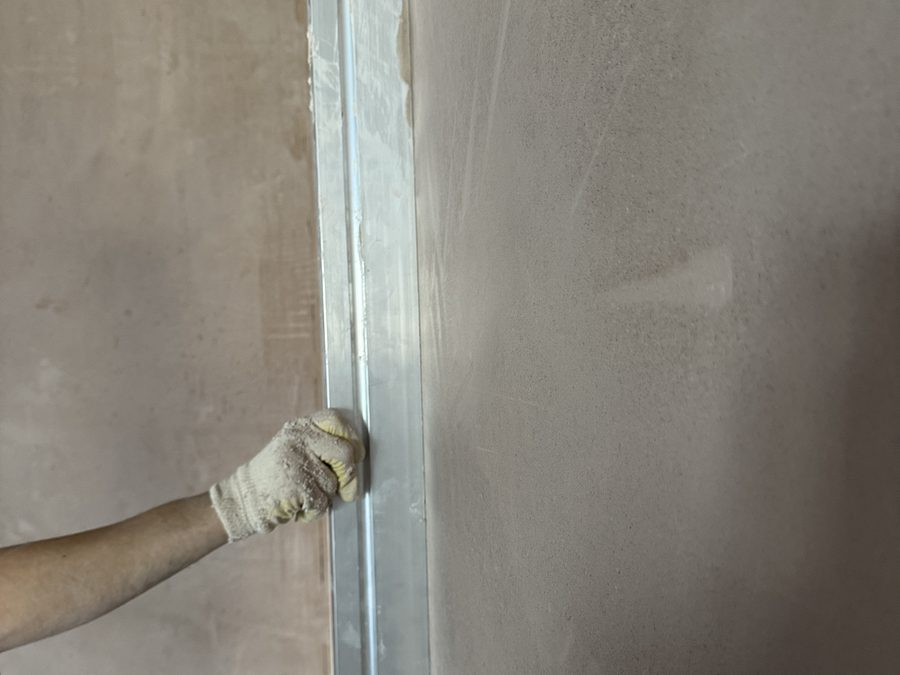
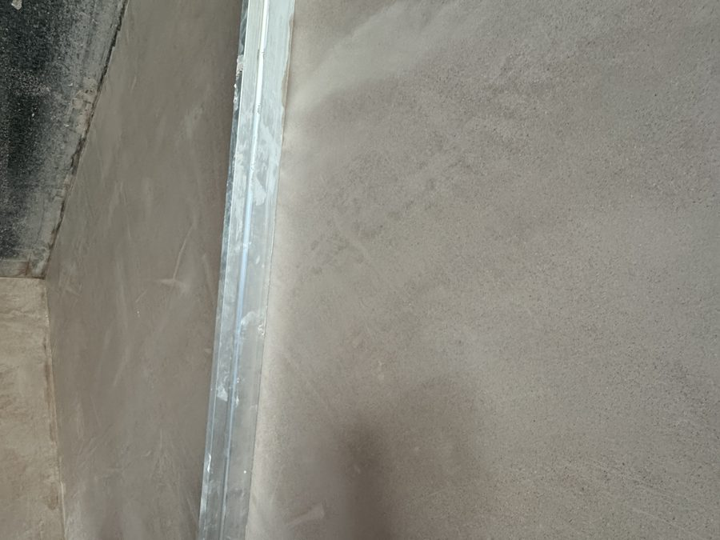
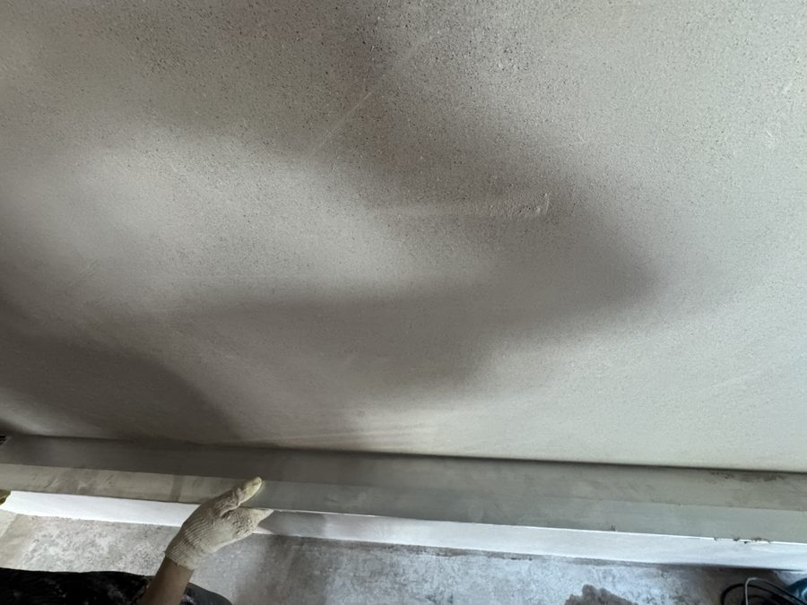
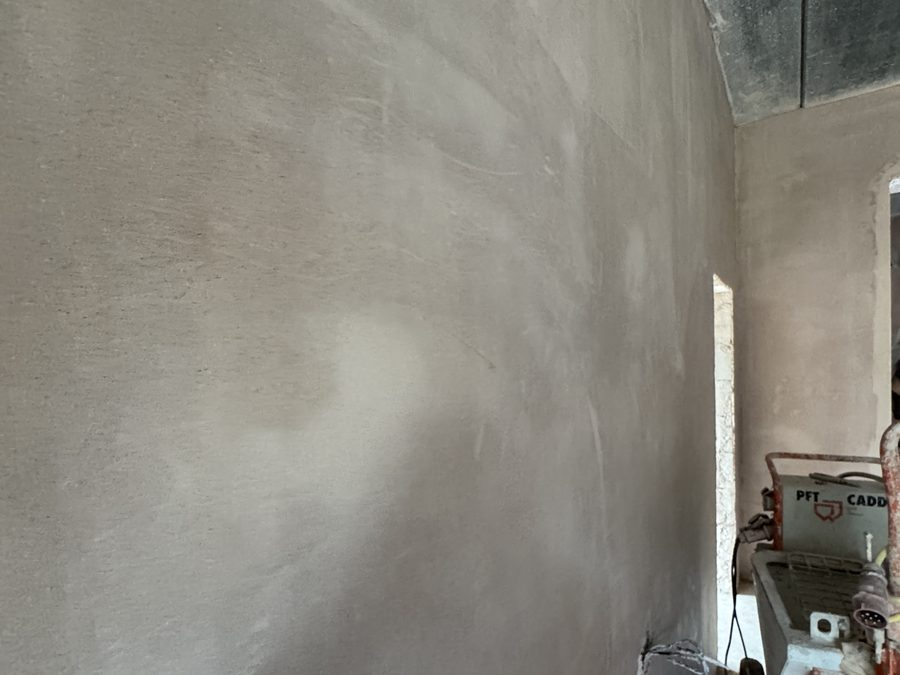

Комната в доме из газоблока
Стены из газоблока со швами и перепадами. Вывели плоскость по маякам, откосы и углы — в 90°.
Реальные снимки с объекта: что было со стенами до нашего приезда, как идёт работа станцией и какая плоскость получается на выходе. Виды работ описаны в разделе услуг, ставки — в прайсе.


Стены из газоблока со швами и перепадами. Вывели плоскость по маякам, откосы и углы — в 90°.


Работали по укрытому полу, окна и радиаторы закрывали сами. Дверные проёмы выведены вместе со стенами.


Заходили со своей станцией: от объекта нужны были только вода и электричество.


Раствор подаётся станцией, бригада вытягивает его правилом по маякам и подрезает — отсюда ровная плоскость.


После подрезки поверхность заглаживается. Плоскость проверяем двухметровым правилом при заказчике.
Прикладываем к стене в нескольких точках: просвет под правилом не должен превышать предельное отклонение для категории штукатурки, записанной в договоре, — по СП 71.13330.2017.
Проверяем вертикаль стен и прямые углы там, где встанет мебель, плитка или дверные коробки.
Глухой звук означает пустоту под слоем. Такие участки переделываем до подписания акта.
Оставьте заявку с фото стен — скажем, что с ними делать и сколько это будет стоить.
Связаться с нами